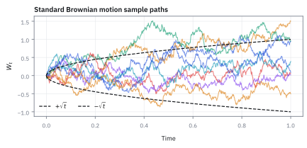
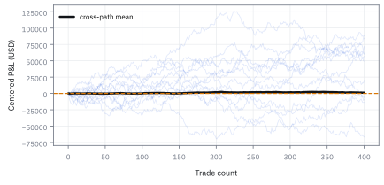
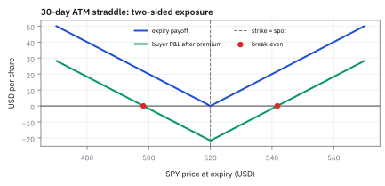

9.2 Building Martingales from a Random Walk
หัก drift ออกจาก cumulative P&L แล้ววัดสิ่งที่เหลือด้วย scale ของ noise
กลยุทธ์หนึ่งรู้อยู่แล้วว่าได้เฉลี่ย \$320 ต่อไม้ และแต่ละไม้เหวี่ยงราว \$2,500 เทรดเดอร์ทำไป 400 ไม้ ได้กำไรสะสม \$165,000 มากกว่าที่ควรได้ \$37,000 หัวหน้า desk ถามว่าส่วนเกินนี้คือฝีมือ หรือแค่โชค?
เฉลย: ยังเป็นโชคได้สบาย ๆ ถ้าเทรดเดอร์ไม่มีฝีมือเพิ่มเลย โอกาสเห็นส่วนเกินขนาดนี้หรือมากกว่ายังมีราว 23% และถ้าส่วนเกินต่อไม้เท่าเดิมจริง ต้องเทรดอย่างน้อย 2,807 ไม้ถึงจะแยกออกจากโชคได้
วิธีได้คำตอบคือหักส่วนที่รู้ว่าจะโตออกจากเส้นกำไร สิ่งที่เหลือเป็น martingale แล้วจึงเทียบกับขนาดความเหวี่ยงปกติ
ศัพท์ที่ใช้ในหัวข้อนี้
- random walk
- เส้นที่ได้จากการบวกก้าวสุ่มทีละก้าว ใช้จำลองกำไรสะสมที่โตทีละไม้
- increment
- การเปลี่ยนแปลงหนึ่งก้าว เช่นกำไรขาดทุนของไม้เดียว ใช้เป็นก้อนที่เอามาบวกเป็นเส้นสะสม
- Independent and Identically Distributed (IID)
- สมมติฐานว่าแต่ละไม้ไม่ส่งข้อมูลถึงกัน และมาจากรูปแบบความน่าจะเป็นเดียวกัน ใช้ให้ค่าเฉลี่ยของไม้ถัดไปคงที่ไม่ว่าอดีตเป็นอย่างไร
- cumulative profit and loss (cumulative P&L)
- กำไรขาดทุนที่บวกสะสมทุกไม้จนถึงตอนนี้ ใช้ดูผลงานรวม แต่ยังปนส่วนที่กลยุทธ์ควรได้อยู่แล้ว
- edge
- กำไรเฉลี่ยต่อการตัดสินใจหนึ่งครั้ง ใช้เป็นเส้นฐานว่ากลยุทธ์ควรทำเงินได้เท่าไร
- baseline
- กำไรสะสมที่ควรได้ถ้าทุกไม้ออกมาเท่ากับ edge พอดี ใช้เป็นเส้นอ้างอิงที่หักออกจากผลจริง
- drift
- ค่าเฉลี่ยที่เพิ่มขึ้นต่อหนึ่งก้าว ใช้บอกแนวโน้มที่คาดได้ล่วงหน้า ซึ่งสะสมเป็นเส้นตรง
- martingale difference
- ก้าวที่มีค่าเฉลี่ยเป็นศูนย์เมื่อรู้อดีตทั้งหมด ใช้เป็นก้อนสร้างของเส้นส่วนเกินที่ไม่มีแนวโน้มให้ทาย
- variance
- ค่าเฉลี่ยของระยะห่างจากค่าเฉลี่ยยกกำลังสอง ใช้วัด noise เพราะบวกกันได้ตรง ๆ เมื่อไม้ไม่เกี่ยวกัน
- standard deviation
- รากที่สองของ variance ซึ่งกลับมามีหน่วยเป็นเงิน ใช้เทียบส่วนเกินกับขนาดความเหวี่ยงปกติ
- z-score
- ระยะห่างจากค่าเฉลี่ยวัดเป็นจำนวนเท่าของ standard deviation ใช้เทียบผลงานข้ามกลยุทธ์ที่ขนาดต่างกัน
- Central Limit Theorem (CLT)
- ผลที่ว่าผลรวมของก้าวอิสระจำนวนมากมีรูปร่างเข้าใกล้ระฆัง ใช้ประมาณโอกาสของส่วนเกินขนาดหนึ่ง (หัวข้อ 1.9)
- Cumulative Distribution Function (CDF)
- โอกาสสะสมที่ค่าจะไม่เกินจุดหนึ่ง ใช้แปลง z-score เป็นพื้นที่หาง
- limit
- เพดานขนาดสถานะหรือความเสี่ยงที่ desk อนุมัติ ใช้คุมว่าความเสียหายสูงสุดอยู่ในงบ
สัญลักษณ์ที่ใช้ในหัวข้อนี้
| สัญลักษณ์ | ความหมาย | หน่วย |
|---|---|---|
| $X_i$ | กำไรขาดทุนของไม้ที่ $i$ | USD/ไม้ |
| $\mu$ | edge คือกำไรเฉลี่ยต่อไม้ | USD/ไม้ |
| $\sigma$ | standard deviation ของกำไรต่อไม้ | USD/ไม้ |
| $S_n$ | กำไรสะสมหลัง $n$ ไม้ | USD |
| $M_n$ | กำไรสะสมหลังหัก baseline $n\mu$ คือส่วนเกินสะสม | USD |
| $Y_i$ | ส่วนเกินของไม้เดียว $X_i-\mu$ | USD/ไม้ |
| $\mathbb E_n[\cdot]$ | ค่าเฉลี่ยเมื่อรู้ผลทุกไม้จนถึงไม้ที่ $n$ (หัวข้อ 9.1) | หน่วยของตัวข้างใน |
| $n$, $m$ | จำนวนไม้ที่ทำแล้ว และจำนวนไม้ในอนาคต | ไม้ |
| $z$ | ส่วนเกินวัดเป็นจำนวนเท่าของ standard deviation | ไม่มีหน่วย |
| $\Phi$ | CDF ของระฆังมาตรฐาน | 0 ถึง 1 |
ที่มาที่ไป: เส้นกำไรของกลยุทธ์ที่ดี ไม่ใช่ martingale
กลยุทธ์ที่มี edge เป็นบวกมีเส้นกำไรสะสมที่ไต่ขึ้นโดยเฉลี่ย แปลว่ามันไม่ใช่ martingale ซึ่งดีสำหรับเจ้าของกลยุทธ์ แต่เป็นปัญหาสำหรับคนตรวจผลงาน เพราะเส้นที่ไต่ขึ้นอยู่แล้วไม่บอกว่าส่วนไหนเป็นฝีมือเพิ่ม
ทางออกคือหักส่วนที่รู้ว่าจะโตออกไป สิ่งที่เหลือเป็น martingale และมีความหมายทางธุรกิจตรง ๆ คือส่วนที่เกินจากที่ควรได้ เหมือนตั้งศูนย์ตาชั่งก่อนชั่งของ
ขั้นที่ 1 — เกมมือ: ไม้ละ +\$3 หรือ −\$1 เส้นกำไรไต่ขึ้นเฉลี่ยไม้ละ \$1
ก่อนเจอตัวเลขใหญ่ของ desk ลองเกมที่คำนวณด้วยมือได้ แต่ละไม้ได้ +\$3 หรือเสีย \$1 อย่างละครึ่ง ไม้แรกได้ +\$3 ถามว่าหลังไม้ที่สองควรมีเงินเท่าไรโดยเฉลี่ย
ไม้ถัดไปเฉลี่ยได้ \$1 เสมอ ไม่ว่าไม้ก่อนหน้าออกอะไร คำทายของรอบหน้าจึงสูงกว่าเงินตอนนี้ \$1 ทุกครั้ง เส้นนี้เป็น submartingale ไม่ใช่ martingale
ขั้นที่ 2 — หักไม้ละ \$1 ออก แล้วคำทายหยุดขยับ
ถ้าแนวโน้มคือ \$1 ต่อไม้ ก็หักไม้ละ \$1 ออกจากเส้นกำไร เรียกสิ่งที่เหลือว่าส่วนเกินสะสม แล้วตรวจเงื่อนไข martingale ด้วยตัวเลขเดิม
หลังหักแนวโน้ม ส่วนเกินของแต่ละไม้กลายเป็น +\$2 หรือ −\$2 อย่างละครึ่ง เฉลี่ยศูนย์พอดี คำทายของส่วนเกินรอบหน้าจึงเท่ากับส่วนเกินตอนนี้ ขั้นต่อไปทำแบบเดียวกันกับตัวอักษรเพื่อให้ใช้ได้กับทุกกลยุทธ์
ขั้นที่ 3 — ของที่โจทย์ให้: เส้นกำไรสะสม กับสมมติฐานข้อเดียว
สองก้อนนี้ไม่ได้คำนวณมา เส้นกำไรสะสมคือสิ่งที่ desk เห็นทุกวัน ส่วนสมมติฐานคือทุกไม้มีค่าเฉลี่ย $\mu$ ไม่ว่ารู้อดีตมาอย่างไร ทั้งหัวข้อไม่เพิ่มสมมติฐานอื่น
บรรทัดซ้ายบวกกำไรขาดทุนทีละไม้ บรรทัดขวาบอกว่าก่อนไม้ที่ i จะเกิด ค่าเฉลี่ยของมันคือ edge เสมอ ในเกมมือ μ เท่ากับ \$1
ขั้นที่ 4 — ทำไมเส้นดิบไม่ใช่ martingale: แนวโน้ม $m\mu$ ค้างอยู่
ก่อนแก้ต้องรู้ว่าพังตรงไหน แยกเส้นกำไรในอนาคตเป็นส่วนที่รู้แล้วกับไม้ที่ยังไม่เกิด แล้วเฉลี่ยทีละก้อน
กำไรที่เกิดแล้วรู้ค่าจึงออกมานอกค่าเฉลี่ย ส่วนแต่ละไม้ในอนาคตเฉลี่ยได้ μ ตามสมมติฐานของขั้นที่ 3 เมื่อ μ เป็นบวก คำทายสูงกว่าวันนี้ m เท่าของ μ เหมือน \$1 ต่อไม้ของเกมมือ
Figure 9.2a — observed P&L versus the baseline

กำไร \$165,000 ดูโดดเด่น แต่เส้นที่ควรได้อยู่ที่ \$128,000 ช่องว่าง \$37,000 ต่างหากคือสิ่งที่ต้องทดสอบ
ขั้นที่ 5 — นิยามของเส้นส่วนเกิน: หัก baseline ทุกก้าว
บรรทัดนี้เป็นนิยามของตัวใหม่ ไม่ใช่ผลที่พิสูจน์ รู้แล้วว่าตัวที่ทำให้เงื่อนไขพังคือแนวโน้มไม้ละ μ จึงหักออกทุกไม้ แบบเดียวกับที่หักไม้ละ \$1 ในขั้นที่ 2
เส้นส่วนเกินคือกำไรสะสมลบกำไรที่ควรได้ เขียนอีกแบบคือผลรวมของส่วนเกินรายไม้ แต่ละไม้เฉลี่ยศูนย์เมื่อรู้อดีต ตำราเรียกก้อนแบบนี้ว่า martingale difference
ขั้นที่ 6 — พิสูจน์ว่าเส้นส่วนเกินเป็น martingale ทีละก้อน
แยกค่าปลายทางเป็นสามก้อน: ก้อนที่รู้แล้ว ก้อนที่ยังไม่เกิด และ baseline ที่เป็นเลขธรรมดา แล้วเฉลี่ยทีละก้อน
บรรทัดแรกหั่นกำไรสะสมเป็นของที่เกิดแล้วกับของที่ยังไม่เกิด บรรทัดสองเฉลี่ยทีละก้อน ของที่รู้แล้วเฉลี่ยได้ตัวมันเอง ส่วนเลข baseline ไม่สุ่มจึงคงเดิม
จุดชี้ขาดคือบรรทัดสี่ ตรงที่ mμ บวกและลบหักกันพอดี ส่วนที่เกี่ยวกับอนาคตหายไปหมด ถ้าไม่ได้หักแนวโน้มออกในขั้นที่ 5 พจน์นี้จะค้างอยู่เหมือนในขั้นที่ 4
Figure 9.2b — centering removes predictable drift

หลังหัก nμ ค่าเฉลี่ยข้าม 600 เส้นทางจำลองอยู่ใกล้ศูนย์ตลอด แม้เส้นทางรายเส้นยังกว้างขึ้นตามเวลา
ขั้นที่ 7 — แทนตัวเลขของ desk: baseline และส่วนเกินหลัง 400 ไม้
edge \$320 และความเหวี่ยง \$2,500 ต่อไม้มาจากข้อมูลช่วงก่อนหน้า ไม่ได้ประมาณจาก 400 ไม้ชุดที่กำลังประเมิน คำนวณกำไรที่ควรได้ก่อน แล้วหักออกจากผลจริง
ถ้าทุกไม้ออกมาเท่ากับ edge พอดี กำไรสะสมจะเป็น \$128,000 ผลจริง \$165,000 จึงเกินมา \$37,000 ตัวเลขนี้คือสิ่งที่ต้องตัดสินว่าเป็นฝีมือหรือโชค
ขั้นที่ 8 — คำทายของกำไรสะสมที่ไม้ที่ 800 ได้สองทาง
ใช้สมบัติที่เพิ่งพิสูจน์ ทำนายกำไรสะสมเมื่อเทรดอีก 400 ไม้จนครบ 800 ไม้ แล้วคิดอีกทางหนึ่งเพื่อตรวจว่าตรงกัน
ทางแรกคือกำไรที่มีแล้วบวกอีก 400 ไม้ไม้ละ \$320 ทางที่สองบอกว่าส่วนเกินสะสมเฉลี่ยไม่ขยับ จึงบวก baseline ทั้ง 800 ไม้เข้าไป ได้ \$293,000 เท่ากัน อดีตเข้ามาผ่านตัวเลขปัจจุบันตัวเดียว เส้นทางที่ผ่านมาไม่สำคัญ
ขั้นที่ 9 — ความเหวี่ยงของเส้นส่วนเกิน: ทำไม variance บวกกันเป็น $n\sigma^2$
ค่าเฉลี่ยของส่วนเกินไม่ขยับ แต่ความไม่แน่นอนยังกว้างขึ้น ยกกำลังสองของผลรวมปกติมีพจน์คูณข้ามโผล่มา ขั้นนี้แสดงว่าสมบัติ martingale กวาดพจน์คูณข้ามทิ้งทั้งหมด
ส่วนเกินมีค่าเฉลี่ยศูนย์ variance จึงเหลือค่าเฉลี่ยของกำลังสอง กระจายกำลังสองได้พจน์ของแต่ละไม้กับพจน์คูณข้ามของทุกคู่
ส่องจากเวลา j−1 ไม้เก่าเกิดแล้วจึงดึงออกมาได้ ไม้ใหม่ยังไม่เกิดและเฉลี่ยศูนย์ พจน์คูณข้ามจึงเป็นศูนย์ทุกคู่ noise รวมจึงโตเป็นรากที่สองของจำนวนไม้ ขณะที่ baseline โตเป็นเส้นตรง
ขั้นที่ 10 — ตรวจสูตรด้วยเกมมือ: สองไม้ได้ variance 8
สูตรที่ได้ควรตรวจกับของที่นับได้ ในเกมมือส่วนเกินรายไม้เป็น +2 หรือ −2 จึงมี variance 4 หลังสองไม้สูตรทำนาย 8 ลองนับทั้งสี่เส้นทาง
สองเส้นทางที่ส่วนเกินหักล้างกันเหลือศูนย์ คือที่มาของการที่พจน์คูณข้ามหายไป ผลนับด้วยมือได้ 8 ตรงกับสองเท่าของ 4 ตามสูตร
ขั้นที่ 11 — ขนาดความเหวี่ยงหลัง 400 ไม้ของ desk
ส่วนเกิน \$37,000 จะแปลว่าเก่งหรือฟลุ้คตอบไม่ได้ถ้าไม่รู้ว่าความเหวี่ยงปกติกว้างแค่ไหน variance มีหน่วยเป็นเงินยกกำลังสอง จึงถอดรากกลับเป็นหน่วยเงิน
ความเหวี่ยงปกติของส่วนเกินหลัง 400 ไม้คือ \$50,000 ใหญ่กว่าส่วนเกินที่เห็น \$37,000 เสียอีก สัญญาณจึงยังจมอยู่ใน noise
Figure 9.2c — signal grows linearly, noise grows with square-root time

baseline โตเร็วกว่าแถบ noise ในระยะยาว แต่ที่ 400 ไม้ แถบ noise \$50,000 ยังกว้างกว่าส่วนเกิน \$37,000 จึงยังแยกฝีมือไม่ออก
ขั้นที่ 12 — วัดส่วนเกินเป็น z-score
หารส่วนเกินด้วยขนาดความเหวี่ยงได้ตัวเลขไร้หน่วย ที่บอกว่าผลที่เห็นอยู่ห่างจากปกติกี่เท่า ตัวเลขนี้เทียบข้ามกลยุทธ์ที่ขนาดต่างกันได้
ส่วนเกินอยู่เหนือศูนย์แค่ 0.74 เท่าของความเหวี่ยงปกติ เทียบกับเกณฑ์ที่ใช้กันทั่วไปราว 2 เท่า ยังห่างไกล
ขั้นที่ 13 — แปลง z-score เป็นโอกาสด้วยระฆัง
ใช้ CLT ของหัวข้อ 1.9 ตอบคำถามที่ desk ถามจริง ถ้าไม่มีฝีมือเพิ่มเลย จะเห็นผลดีขนาดนี้หรือดีกว่าบ่อยแค่ไหน
พื้นที่หางขวาเหนือ 0.74 เหลือราว 23% ประมาณหนึ่งในสี่ของเทรดเดอร์ที่ไม่มีฝีมือเพิ่มจะได้ผลดีขนาดนี้หรือดีกว่า
Figure 9.2d — the observed excess is not a rare tail

พื้นที่หางขวาหลัง z = 0.74 ยังมีราว 23% ผลงานนี้น่าติดตาม แต่ยังไม่ใช่หลักฐานพอสำหรับเพิ่ม risk limit
ขั้นที่ 14 — ถ้าส่วนเกินต่อไม้เท่าเดิมจริง ต้องเทรดกี่ไม้ (เกณฑ์ 1.96 เท่า)
ส่วนเกินต่อไม้คือ \$37,000 หาร 400 ได้ \$92.5 ส่วนเกินสะสมโตเป็นเส้นตรงตามจำนวนไม้ แต่ความเหวี่ยงโตตามรากที่สอง จึงมีจุดที่เส้นแรกแซงเส้นหลัง
ฝั่งซ้ายโตตามจำนวนไม้ ฝั่งขวาโตตามรากที่สอง หารทั้งสองข้างด้วยรากของ n จึงแก้ได้ตรง ๆ ต้องปัดขึ้นเป็น 2,807 เพราะจำนวนไม้เป็นจำนวนเต็ม คือราวเจ็ดเท่าของ 400 ไม้ที่ทำมาแล้ว
คำตอบของหัวหน้า desk
โจทย์ให้อะไรมาบ้าง: edge รู้อยู่แล้ว \$320 ต่อไม้ standard deviation \$2,500 ต่อไม้ เทรดไปแล้ว 400 ไม้ได้กำไรสะสม \$165,000
คำตอบ: (ก) ส่วนเกินคือ \$37,000 (ข) คำทายของกำไรสะสมที่ 800 ไม้คือ \$293,000 (ค) ส่วนเกินนี้คือ z = 0.74 โอกาสราว 23% ยังไม่พอสรุปว่าเป็นฝีมือ จึงยังไม่อนุมัติเพิ่ม limit (ง) ถ้าส่วนเกินต่อไม้เท่าเดิม ต้องรอถึง 2,807 ไม้
ตรวจเองใน 10 วินาที: 400 × 320 = 128,000 ส่วนเกิน 165,000 − 128,000 = 37,000 ความเหวี่ยง 2,500 × 20 = 50,000 และ 37,000 / 50,000 = 0.74
แปลว่าอะไร: ตัวเลขกำไรก้อนโตไม่ได้แปลว่าเป็นฝีมือ ต้องเทียบกับกำไรที่ควรได้และขนาดของ noise ก่อนตัดสินใจเพิ่ม risk limit
ลองเอง — เกมมือ 100 ไม้
โจทย์ให้อะไรมาบ้าง: เกม +\$3 หรือ −\$1 อย่างละครึ่งของขั้นที่ 1 เล่นไป 100 ไม้ ได้กำไรสะสม \$130
คำตอบ: กำไรที่ควรได้คือ 100 × 1 = \$100 ส่วนเกิน \$30 ความเหวี่ยงคือ 2 × √100 = \$20 จึงได้ z = 1.5 โอกาสเห็นผลดีขนาดนี้โดยบังเอิญคือ 1 − 0.93319 = 6.68%
ตรวจเองใน 10 วินาที: σ ของเกมคือ 2 จากขั้นที่ 10 ส่วน √100 เท่ากับ 10 และ 30 / 20 = 1.5
แปลว่าอะไร: 6.68% น้อยกว่า 23% ของ desk มาก แต่ยังไม่ถึงเกณฑ์ 1.96 เท่า เกมที่เหวี่ยงน้อยเทียบกับ edge แยกฝีมือออกจากโชคได้เร็วกว่า
กับดัก: ใช้ข้อมูลชุดเดียวกันสร้าง baseline และตัดสินผลงาน
ถ้าประมาณ edge จาก 400 ไม้เดิม จะได้ 165,000 / 400 = \$412.50 ต่อไม้ และส่วนเกินในชุดนั้นจะเป็นศูนย์เสมอโดยนิยาม นั่นไม่ใช่ข้อสรุปเรื่องฝีมือ แต่เป็นการใช้ข้อมูลซ้ำ ต้องใช้ baseline จากข้อมูลก่อนหน้า หรือแยกช่วงสร้างกับช่วงประเมินออกจากกัน ถ้าไม้เกี่ยวกัน variance ต้องรวมพจน์คูณข้ามที่ไม่เป็นศูนย์ด้วย
ข้อจำกัด: วิธีนี้สมมติอะไร และของจริงเป็นอย่างไร
| เรื่อง | วิธีนี้สมมติว่า | ของจริงเป็นอย่างไร | ผลที่ตามมาเวลาใช้งาน |
|---|---|---|---|
| ค่าที่หักออก | รู้ edge ที่แท้จริง | ต้องประมาณจากข้อมูลอดีตซึ่งคลาดเคลื่อนได้ | ถ้าประมาณ edge สูงเกิน จะสรุปว่ากลยุทธ์แย่ทั้งที่ไม่แย่ |
| ความคงที่ | edge คงที่ตลอด | มันจางลงเมื่อคนรู้มากขึ้น | ส่วนเกินที่ติดลบเรื่อย ๆ อาจเป็นสัญญาณว่า edge หมดแล้ว ไม่ใช่แค่โชคร้าย |
| ไม้ไม่เกี่ยวกัน | แต่ละไม้ไม่เกี่ยวกัน | ไม้ที่เปิดพร้อมกันเกี่ยวกันเสมอ | จำนวนไม้ที่ต้องใช้จริงมากกว่า 2,807 |
แถวล่างเป็นเหตุผลที่จำนวนไม้ที่ดูเยอะแล้วอาจยังไม่พอ ถ้าไม้เหล่านั้นเปิดพร้อมกัน
แล้วเอาไปใช้ทำอะไรได้จริงบ้าง
ใช้ประเมินกลยุทธ์ระหว่างทาง โดยเทียบกำไรสะสมจริงกับกำไรที่ควรได้ตาม edge ที่ตั้งไว้ แล้ววัดส่วนต่างเป็นจำนวนเท่าของความเหวี่ยง
ใช้คำนวณว่าต้องเทรดอีกกี่ไม้ถึงจะสรุปได้ว่าฝีมือเพิ่มขึ้นจริง ซึ่งมักเป็นตัวเลขที่ใหญ่จนน่าตกใจ และใช้ตั้งเกณฑ์หยุดกลยุทธ์ เมื่อส่วนเกินติดลบเกินสองเท่าของความเหวี่ยงปกติ
สรุปที่ใช้ได้จริง
- เส้นกำไรสะสมที่มี edge เป็น submartingale หักกำไรที่ควรได้ $n\mu$ ออกแล้วจึงเป็น martingale
- proof ใช้เพียงข้อเดียว คือไม้ในอนาคตเฉลี่ยได้ μ ไม่ว่าอดีตเป็นอย่างไร แล้ว mμ ก็หักกันพอดี
- variance ของส่วนเกินคือ n เท่าของ variance ต่อไม้ เพราะพจน์คูณข้ามเป็นศูนย์ ความเหวี่ยงจึงโตตามรากที่สอง
- ที่ 400 ไม้ ส่วนเกิน \$37,000 เทียบความเหวี่ยง \$50,000 ได้ z = 0.74 โอกาสราว 23% ยังเป็นโชคได้
- baseline ต้องมาจากข้อมูลคนละชุดกับที่ใช้ประเมิน และถ้าไม้เกี่ยวกันต้องเพิ่มพจน์คูณข้ามเข้า variance